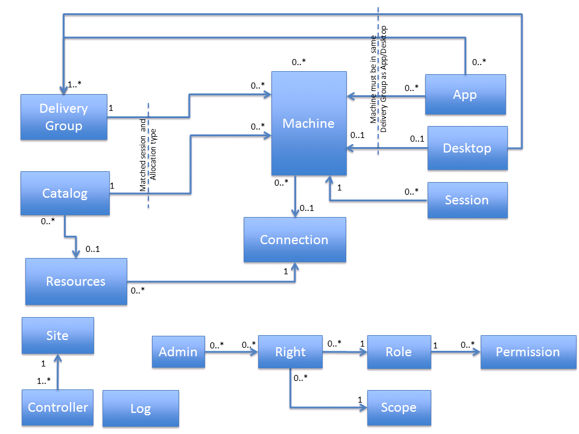

Understanding the XenDesktop Administration Model
XenDesktop 7 has an administration model that is defined by a set of objects and their interconnections, as shown in the following illustration.

The following sections describe each object, its responsibilities, characteristics and basic properties.
Connection
A Connection entity provides the details required to establish a connection to the administration point for a virtualization platform. These details are used to provide any power management and provisioning functions that are required. The Connection defines:
-
The identity of the connection, which includes a name and an internal ID value (a GUID).
-
Type—XenServer, SCVMM or vCenter.
-
Username—the account name to use for connections to the hypervisor.
-
Password—the password to use for connections to the hypervisor.
-
The state of the connection and whether the hypervisor can be communicated with or not.
-
Any current alerts raised by the hypervisor.
The password cannot be read back once set and is stored in the database in an encrypted form.
There is one of these entities in the model for each platform definition; however, there will be many connections established to the virtualization platform at run time to service the requirements of the XenDesktop deployment. These connections can be shared by many Resources entities (see below for further details).
Note: When setting up a Connection with XenServer, you specify a host or XenServer pool; when setting up a Connection with Microsoft Hyper-V or VMware, you provide details to the management servers (SCVMM or vCenter). Also, when configuring a Connection, you must specify the user name in the correct format, depending on the virtualization solution you're using. If you're setting up a Connection with XenServer, specify a plain user name; for example "username"; for a Connection with VMware or Hyper-V, specify a domain user name; for example "domain\username".
Resources
Note: This applies only to the creation of new machines when using Machine Creation Services (MCS) or Provisioning Services (PVS).
This setting defines a set of resources within the virtualization platform that are available for the product to consume. This allows the administrator to constrain deployment to a subset of the resources that the platform provides, and enables differing sets of resources to be defined for different purposes. This can control the storage and networking usage of machines provisioned within the site. The Resources entity defines:
-
Networks—the networks which are able to be used when provisioning new machines into the virtualization plaform (for PVS, this is the streaming network; only one can be chosen or the first one is used).
-
Storage—the storage to use when provisioning new machines into the virtualization platform.
At least one Resources setting must be defined for each Connection object if a provisioning mechanism is to be used. Many Resources settings can be linked to a single Connection.
The connection details are provided by the Connection entity.
Note: When specifying Resources on a Connection to either SCVMM or vCenter, you select the host or cluster as well as the storage and networking.
Administrator
This defines the person who can administer the product. There can be various administrators of the product, each with a different set of capabilities within the product. The Administrator defines:
-
The AD account the administrator is defined by, defined as their name and SID value. This can be an individual user or a security group.
-
The rights the administrator has (i.e. what roles are available over which scopes).
Machine
A machine is a representation of a virtual or physical computer that can be used within a site to provide sessions to users. The machine defines:
-
Identity of the machine, such as SAM name, DNS name, host (hypervisor) name, IP address, SID, License ID etc.
-
Status of the machine, including power state, registration state, Personal vDisk state, load index etc. A summary state value aggregates many of these into a single state value.
-
Information about the environment and configuration of the machine, such as version numbers of installed operating systems and Citrix components, including the 'functional level' of the machine.
-
Data relating to the most recent activity of the machines, such as the last reason for de-registering, the last power action performed on the machine, the last connection failure etc.
-
Maintenance mode and 'WindowsConnectionSetting' states for controlling the enable/disable/drain behavior of the machine.
-
Visible user-resource settings for the machine for the assigned desktop case, such as icon, published name etc.
-
For multi-session machines (Server OS Machines), aggregate information about the sessions running, such as the number of sessions active, pending etc.
-
'Tag' values associated with an assigned machine.
-
Provisioning image information, such as the path to the master image, the provisioning scheme used to create the machine, and whether or not the machine has an updated image pending on its next reboot.
Most of the machine values are exposed by the Broker Service SDK, but items are also exposed by other services, such as the Machine Creation Service (MCS). Other values shown on a per-machine basis are inherited from the Catalog or Delivery Group (if any) that the machine is associated with, or from the provisioning scheme used to create it. For example, the machine type which is defined at the Catalog level by a combination of factors such Physical or Virtual, static or random, how user changes are persisted and others. For single-session machines (Desktop OS Machines), information about the session (if any) that is running on the machine is also associated with the machine. This includes connected user identity, session state, protocol in-use and so on. Machines can exist only in the model if they are defined as part of a Catalog; they cannot exist outside of this concept.
Catalog
A Catalog defines a set of machines that are usually, but not always, expected to be equivalent. Multiple Catalogs can exist within a single deployment, enabling different sets of machines to be built and stored for different purposes. The Catalog defines:
-
Catalog type, defined by the values of the following properties:
-
The provisioning method for the machines (MCS, PVS or manual)
-
How machines in the Catalog are allocated to users: statically with permanent assignment to users or randomly each time a user requests a resource
-
Whether the machines are single-session (Desktop OS Machines) or multi-session (Server OS Machines)
-
Whether the machines are physical or virtual
-
How user changes to machines are handled, whether they are discarded after the user logs off or preserved locally on the machine or using Personal vDisk
-
-
If the Catalog is to be used for Remote PC users and, if so, which Active Directory (AD) OUs are to be associated with the Catalog, and which Delivery Groups are associated with the Catalog.
-
MCS provisioning-associated details (if MCS provisioning is to be used):
-
Master image for the machines
-
Memory size and number of CPUs
-
Personal vDisk disk size, drive letter, and allocation percentages
-
AD account naming scheme and OU where the machines are created, and a list of already created accounts
-
-
Details of any PVS server associated with the Catalog.
-
The functional level expected for machines; machines of lower functional level are not allowed to register with the site.
Also exposed at the Catalog level are some usage values for machines consumed or available in the Catalog.
Delivery Group
The Delivery Group provides details about a collection of machines used to provide desktops and/or applications to an end-user. Many Delivery Groups can be linked to the same Catalog, enabling machines in a Catalog to be distributed in various ways depending on the requirements of different user sets. The Delivery Group defines:
-
The allocation type of the machines in the group, indicating whether machines are shared between users (random) or assigned persistently to one or more users (static), and whether the machines are single-session (Desktop OS) or multi-session (Server OS) machines.
-
The delivery type of the group, indicating whether the group serves applications only, desktops only, or a mixture of applications and desktops to users.
-
Settings controlling the power management of machines in the group, including:
-
Which hours of the day, on different days of the week, are considered 'peak' time
-
How many machines to keep running at different hours of the day on different days of the week for random/unassigned machines, including buffer sizes
-
The timezone to use for evaluating the hours of the day for the above settings
-
Whether and how assigned machines are power managed
-
Whether and how to shut down or suspend machines after trigger events, such as user disconnect or logoff
-
Whether or not the machines are considered corrupted by any sessions run on them and forced to restart to return them back to a clean, known state after each use
-
-
How desktop resources from the group appear to an end-user, including icon used, color depth and name. Also defined is the security level required on the ICA connections for machines in the group. For desktop resources, the number of desktops each user is allowed simultaneously from the group.
-
Rules used to establish the availability of these machines to the end users. Rules can factor in, not just the user's identity, but also where the user is connecting from and how, what the state of the client device is, and which remoting protocols are supported.
-
Whether the group is enabled or disabled, including setting of maintenance mode.
-
Whether the end-user is allowed to reset the machine themselves (for example, using StoreFront).
-
'Tag' values associated with a random/shared group.
-
The functional level expected for machines in the group; machines of lower functional level are not allowed to register with the site.
-
Whether the group is to be used for Remote PC users, and which Remote PC catalogs are associated with the group.
-
A schedule for regularly rebooting multi-session (Server OS) machines at a particular time and day, and settings to control how that reboot is done.
Also associated with Delivery Groups are settings for features such as Profile management and Storefront URL settings, which are separately defined as 'Machine Configuration' objects and associated with one or more Delivery Groups.
Application
This provides details of a seamless (i.e. floating window, separate from a desktop) application that is to be made available to end-users.Typically, each application is associated with a single delivery group, but application definitions can be shared across multiple groups, if required.
Applications can be run either on a remote machine and displayed on the local client desktop, or installed and run on the local client machine with windows overlaid onto a remote desktop. The application defines:
-
The type of the application, whether 'HostedOnDesktop' or 'InstalledOnClient'.
-
For HostedOnDesktop applications:
-
The path to the application initial executable to be run on the VDA machine and the command line parameters, if any, to be supplied when the application is started
-
Optionally, a specific set of users who have access to the application as a subset of users who have access to the Delivery Group(s)
-
Any application-specific settings to be applied to the application process, including a CPU priority level, whether the application should wait for proxy printers to be created or not, etc.
-
-
For InstalledOnClient applications:
-
A flag to indicate that the icon for the application is to be fetched from the client device
-
A flag to specify that extra security measures are to be taken with the arguments supplied to the application
-
-
How the application resource appears to an end-user, including icon used, folder location on the client device, name and whether the shortcut appears in the start menu, desktop or both.
-
Any file-type associations for the application, associating file extensions with the application.
-
Which Delivery Group(s) it is associated with, along with an optional priority value for choosing between multiple groups.
-
Whether the application is enabled and, separately, whether it is visible to end users or not.
Desktop
In XenDesktop 7, the Desktop object (which describes both the machine and the session on the machine) is replaced by the Session object and the Machine object, both of which have been expanded to do the work of the Desktop object.
Session
This provides details of a Windows session running on a machine controlled by the site. The session may be one initiated by XenDesktop or XenApp, or one that was created by other means, such as a user logging directly onto the machine through the console or over RDP.
The session defines:
-
The identity of the machine where the session is running, including machine DNS name, IP address, NetBios name, SID etc.
-
The identity of the user who is running the session, including SAM name, UPN, SID, etc.
-
The identity of the user who brokered the connection to the session, including SAM name, SID, etc.
-
The identity of the endpoint client machine being used to connect to the session, including the device name, IP address, ID.
-
The identity of the machine used to request the launch, i.e. the web server from which the launch was made. This includes name and IP address.
-
The identity of the machine used to act as a gateway for the session connection, including machine DNS name, IP address.
-
Details of significant events in the session, including start time, the time when the session was most recently connected to, brokered to etc.
-
The durations of aspects of the most recent session creation or connection, including the time taken to broker the session, time taken to create the session etc.
-
The current status of the session, including an overall session state, whether the ICA connection is secured, what protocol is being used.
-
The current state of the machine running the session, incuding an overall summary state, power state, etc.
-
Details about how the session connection was made, such as whether the session was brokered or connected to autonomously, the session context 'Smart Access' tags in force.
-
Whether the session is 'hidden' or not. Sessions can become hidden if certain types of problems are encountered when a user launches an application or desktop.
-
The list of brokered applications executing in the session.
The session SDK objec also provides information from the related machine, Delivery Group an Catalog SDK objects. This information includes identity information, basic configuration and status information.
Controller
This provides details of the individual Delivery Controller machines in the site. Most of the data is dynamic state data from the running site, rather than configuration settings. The controller shows:
-
Which 'site services' are active on each controller.
-
The version of the controller components.
-
The identity of the controller machine, as fully qualified DNS name, SAM name, SID etc.
-
The type and version of the OS of the controller machine.
-
Current controller and service status, and most recent activity times.
-
Counts of machines registered with the controller.
-
Which hypervisor connections are associated with the controller for site service location purposes.
Most of the controller values are exposed from the Broker Service SDK, but other items are exposed from other services, such as the Machine Creation Service.
Site
The Site is a top-level, logical representation of the XenDesktop site, from the perspective of the configuration services running within it. The site contains licensing information, site metadata and the site name, among others.
A XenDesktop installation has only a single configuration site instance. The Site object has the following properties:
-
Name
-
Controllers—list of controllers in the site
-
Databases—list of databases used by the site
-
DefaultIconUid
-
LicenseInformation
-
Metadata
Log
This provides details of the collected configuration logs, which describe the administrator activity on the site since logging was enabled. Administrator read actions are not logged, but any administrator action that changes the configuration or state of the site is included in the log. You can view the log at one of three levels: high-level logs, low-level logs and operation details. Each low-level log is a part of a larger high-level operation which is logged, while operation details describe elements within a single low-level operation. Log items show:
-
The identity of the administrator who performed the operation, including the IP address of the machine from which it was performed.
-
When the operation took place, both start and end times.
-
Whether the operation succeeded or failed for any reason.
-
A description of the operation, as a text string and also characterised by operation type, source type, target type etc.
-
Details of parameters supplied to the operation.
-
Any parent/child relationship in the log hierarchy.
-
For changes in configuration, a before and after value for the items changed.
For more information about what is logged, see the Configuration Logging documentation.
Right
This defines a combination of role and the scope over which role permissions are allowed. Permissions defined in the role can be executed by the specified administrator, but only on objects that are directly or indirectly associated with the specified scope. The Right defines:
-
The role whose permissions are to be allowed.
-
The scope over which the role permissions are to be allowed.
Rights are not SDK objects that can be manipulated separately; they are always associated with a particular Administrator object. A single administrator can have many rights, with the total capability of the administrator being the sum of all their individual rights.
Scope
This defines a named grouping for objects, where objects in the grouping have administrator rights over objects controlled on a role-by-role basis. SDK objects of various types can have scopes directly associated with them, such as Catalogs, Delivery Groups, Connections, Resources etc. These SDK objects have properties that list the scopes that the object has been associated with. Other SDK objects have administrator rights granted by a secondary association with other objects which are directly scoped. For example, Machine objects inherit their scope associations from the Catalogs and Delivery Groups they are members of; Session objects inherit their scope associations from the machines on which the session is running. Some scopes are pre-defined (in practice only the 'All' scope is currently built-in) but you can create other scopes to specify suitable grouping definitions for your particular deployment.
The Scope defines:
-
The identity of the scope, which includes a name and an internal ID value (a GUID).
-
Whether the scope is built-in or not.
Role
Defines a set of permissions that an administrator can perform. Roles are always granted to administrators with an associated scope; they do not provide rights on their own, although some roles may have general permissions that apply to objects which do not have any scopes associated with them ('unscoped objects'). Some roles are pre-defined, but you can create other custom roles to specify suitable sets of permissions for your particular deployment. A Role defines:
-
The identity of the role, which includes a name and an internal ID value (a GUID)
-
Whether the role is built-in or not
-
The set of permissions that make up the role
The built-in roles are:
-
Full Administrator—can perform all tasks and operations.
-
Read Only Administrator—can see all objects in specified scopes, as well as global information, but cannot change anything.
-
Machine Catalog Administrator—can create and manage Machine Catalogs and provision machines.
-
Delivery Group Administrator—can deliver applications, desktops, and machines; can also manage the associated sessions. Allows creation and managing of Delivery Groups and applications.
-
Help Desk Administrator—can view Delivery Groups, and manage the sessions and machines associated with those groups. Allows viewing of end-user resources and limited state change actions for troubleshooting end-user problems, but does not allow most configuration changes.
-
Host Administrator—can manage host connections and their associated resource settings.
Permission
Defines a single console-level task or operation that is allowed when the permission is included in a role. Each permission can allow several low-level SDK operations (cmdlets), and a particular low-level SDK operation can be granted by any number of related permissions. A Permission defines:
-
The identity of the permision, which includes a name and an internal ID value (a GUID).
-
The permission group membersip of the permission. Permission groups collect together permissions relating to a particular functional area.
-
The set of low-level SDK operations covered by the permission.